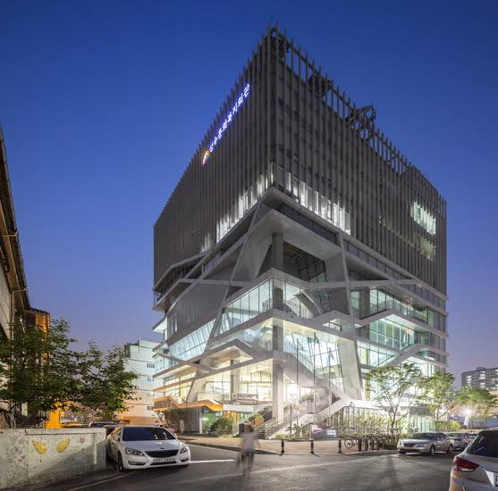
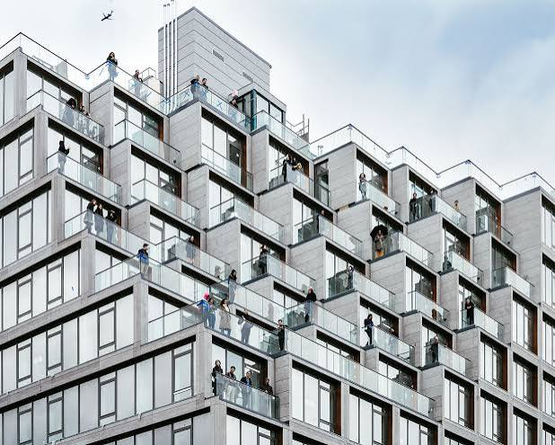
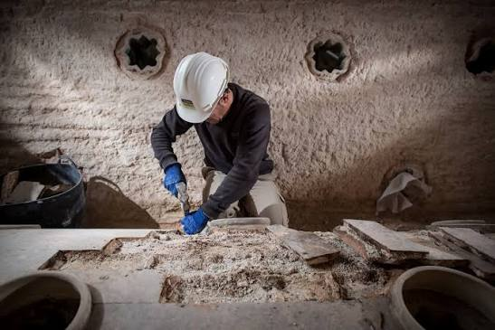
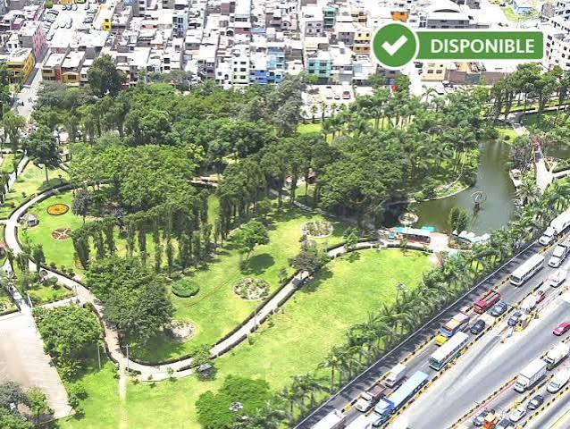

Centro Cultural Urbano Sostenible
Propuesta arquitectónica de espacios públicos integrados con criterios bioclimáticos y eficiencia energética para revitalizar el centro de la ciudad.

Propuesta arquitectónica de espacios públicos integrados con criterios bioclimáticos y eficiencia energética para revitalizar el centro de la ciudad.

Diseño de complejos habitacionales modulares flexibles que se adaptan a las necesidades cambiantes de las familias modernas y de bajos recursos.

Proyecto de intervención, rescate y habilitación contemporánea de una antigua casona colonial para su uso como museo de sitio.

Diseño de paisaje e infraestructura recreativa a gran escala para la recuperación de riberas fluviales urbanas y zonas de esparcimiento.